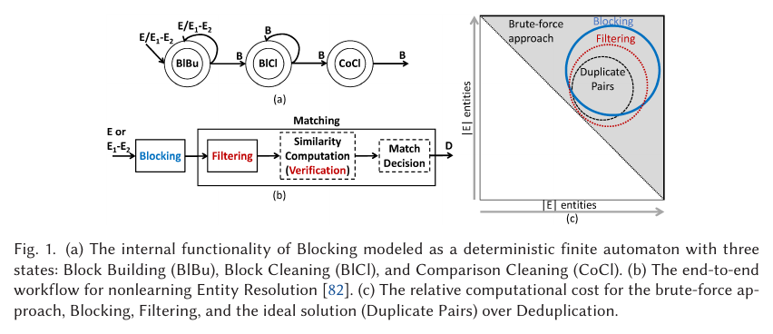

BUỔI 04 · Buổi 4 — Thực hành nhiều nhất
Record Linkage & Entity Resolution
Cùng 1 thực thể thật xuất hiện khác nhau ở nhiều nguồn — làm sao máy tính nhận ra 'David Smith' và 'Davod Smith' là cùng 1 người, ở quy mô hàng triệu bản ghi, không thể so từng cặp thủ công? Slide gốc buổi này trích dẫn Dong & Srivastava, Big Data Integration, Chapter 3 làm nguồn chính — xem bản mở tương đương (PVLDB 2013) trong mục Tài liệu tham khảo cuối trang. Nội dung Similarity Measures khớp đúng Doan-Halevy-Ives Chương 4 'String Matching' §4.2, pipeline Matching/Clustering khớp Chương 7 'Data Matching' (§7.2-7.6).
PHẦN 1/2
01
Đặt vấn đề & Similarity Measures
- Record Linkage, Entity Resolution, Entity Linking — phân biệt 3 khái niệm
- Similarity measure s(x,y) ∈ [0,1] — càng cao càng giống
- Edit Distance, Jaccard, TF/IDF, Soundex
Record Linkage vs. Entity Resolution vs. Entity Linking
- Record Linkagetìm cặp bản ghi ở 2 file khác nhau đại diện cùng 1 thực thể
- Entity Resolution (ER)trường hợp đặc biệt của Entity Linking — khử trùng lặp (có thể trong cùng 1 file)
- Entity Linkingkhái niệm rộng hơn — tạo liên kết giữa các bản ghi có liên quan (không nhất thiết "là 1")
Fellegi & Sunter (1969)
3 kết luận khi so 1 cặp bản ghi:
match,
non-match, hoặc
possible-match (chưa đủ bằng chứng).
Ví dụ mở đầu: 11 bản ghi chuyến bay — 1 thực thể hay 2?
Bảng dữ liệu thật (Dong & Srivastava, Big Data Integration, Table 3.1) liệt kê 11 bản ghi
chuyến bay (hãng bay AL, số hiệu FN, sân bay/giờ đi-đến). Một số dòng mô tả CÙNG 1 chuyến bay thật (chỉ
lệch vài phút do nhập liệu/làm tròn), số khác mô tả chuyến bay KHÁC HẲN.
Câu hỏi cốt lõi của cả bài giảng
Giá trị nào là
lỗi nhập liệu (vẫn cùng 1 chuyến bay), giá trị nào THỰC SỰ phân biệt 2 chuyến bay
khác nhau? Không có quy tắc "khớp tuyệt đối" — phải dùng độ đo tương đồng + ngưỡng quyết định.
Naïve Deduplication (dùng UNION DISTINCT/group-by theo hash) chỉ bắt bản ghi KHỚP TUYỆT
ĐỐI từng ký tự — ví dụ "Matthias Boehm" (IBM Research) vs "Matthias Böhm" (TU Graz) sẽ KHÔNG bị coi là
trùng dù rõ ràng cùng 1 người, chỉ khác dấu ö/oe và nơi công tác.
5 loại lỗi khiến 2 chuỗi tả cùng 1 thực thể mà không giống hệt
- Lỗi gõ/OCR"David Smith" vs "Davod Smith" — hợp với Edit Distance
- Khác định dạng"10/8" vs "Oct 8" — cần chuẩn hoá trước, không đo tương đồng nào tự xử lý được
- Viết tắt"Daniel Walker Herbert Smith" vs "Dan W. Smith"
- Tên/biệt danh khác hẳn"William Smith" vs "Bill Smith" — Edit Distance cho điểm RẤT THẤP dù đúng là 1 người
- Đảo thứ tự từ"Dept. of CS, UW" vs "CS Dept., UW" — hợp với Set-based (Jaccard/TF-IDF) hơn Edit Distance
Phát biểu hình thức & 2 thách thức lớn
Cho 2 tập chuỗi X, Y, tìm MỌI cặp $(x,y)$, $x\in X, y\in Y$ cùng chỉ 1 thực thể thật (gọi là 1
match). Ví dụ: $X=\{$Dave Smith, Joe Wilson, Dan Smith$\}$, $Y=\{$David D. Smith, Daniel W.
Smith$\}$ ⟹ match đúng: Dave Smith↔David D. Smith, Dan Smith↔Daniel W. Smith (Joe Wilson không match
ai cả — không phải bản ghi nào cũng có cặp).
Accuracyđộ chính xác — quyết định đúng/sai từng cặp
Scalabilitykhả năng mở rộng — chạy nổi với dữ liệu lớn (n² cặp)
Similarity measure vs Distance/Cost measure
Giải pháp cho Accuracy: dùng $s(x,y)\in[0,1]$, $s$ càng CAO thì càng giống; khai báo match nếu
$s(x,y)\ge$ ngưỡng $t$. Có 1 biến thể NGƯỢC chiều — distance/cost measure $d(x,y)$ — giá trị
càng NHỎ thì càng giống (Edit Distance chính là 1 distance measure, không phải similarity trực tiếp,
phải đổi qua công thức $s=1-d/\max(len)$).
Thách thức Scalability
Áp dụng $s(x,y)$ cho MỌI cặp là $O(n^2)$ — không khả thi với dữ liệu lớn. Giải pháp: hàm
FindCands chỉ tìm tập ứng viên $Z\subseteq Y$ nhỏ hơn nhiều để so — chính là ý tưởng gốc
của
Blocking (sẽ học kỹ ở Phần 2).
4 nhóm phương pháp đo tương đồng chuỗi
- Sequence-baseddựa theo THỨ TỰ ký tự — Edit distance, Needleman-Wunch, Jaro, Jaro-Winkler
- Set-basedcoi chuỗi là TẬP token, bỏ qua thứ tự — Overlap, Jaccard, TF/IDF
- Hybridlai 2 nhóm trên — Generalized Jaccard, Soft TF/IDF, Monge-Elkan
- Phoneticdựa theo CÁCH PHÁT ÂM — Soundex
Edit Distance (Levenshtein) — tính bằng Dynamic Programming
Ví dụ: color → colour chỉ cần 1 phép chèn (thêm 'u') ⟹ $d=1$.
Similarity: $s(x,y) = 1 - d(x,y)/\max(|x|,|y|) = 1 - 1/6 \approx 0.833$.
Dựng bảng DP đầy đủ: ví dụ x="dva", y="dave"
Công thức truy hồi: $d(i,j)=\min\{d(i-1,j-1)+c(x_i,y_j),\ d(i-1,j)+1,\ d(i,j-1)+1\}$, với
$c=0$ nếu $x_i=y_j$ ngược lại $c=1$. Dựng bảng $4\times5$ (hàng ""/d/v/a, cột ""/d/a/v/e) và truy vết
mũi tên ngược từ góc dưới-phải.
Kết quả
$d(3,4)=2$: đường truy vết tối ưu là
chèn 'a' (ngay sau 'd') và
thay 'a' thành 'e' (vị
trí cuối) — 2 thao tác biến "dva"→"dave". Chi phí dựng bảng: $O(|x|\cdot|y|)$.
Set-based: sinh token (word-split hoặc q-gram)
Thay vì coi chuỗi là DÃY ký tự có thứ tự, coi chuỗi là TẬP (hoặc multi-set) token, rồi dùng
phép toán tập hợp để đo tương đồng. 2 cách sinh token phổ biến:
- Tách theo từphân cách bởi khoảng trắng, có thể kèm stemming + loại stop-word — "david smith" → {"david","smith"}
- q-gramchuỗi con độ dài q liên tiếp, có ký tự biên # — "dave" với q=2 → {#d,da,av,ve,e#}
Bài tập TF/IDF "hnoi"/"hanoi" đã giải dùng "tách theo ký tự" — chính là trường hợp đặc
biệt q=1 không ký tự biên, đúng theo ví dụ gốc x=aab ở slide sau.
Overlap Measure — độ đo set-based đơn giản nhất
Ví dụ: $x=$"dave", $y=$"dav" (q-gram q=2, có ký tự biên): $B_x=\{$#d,da,av,ve,e#$\}$,
$B_y=\{$#d,da,av,v#$\}$ ⟹ $O(x,y)=3$.
Nhược điểm
Không chuẩn hoá theo độ dài — 2 chuỗi DÀI sẽ có overlap cao hơn 2 chuỗi ngắn một cách "giả tạo", dù
không thực sự giống nhau hơn. Đây là động lực dẫn tới Jaccard.
Jaccard & TF/IDF — similarity dạng tập hợp
$B_x=\{a,b,c,d\}$, $B_y=\{b,c,d,e\}$ ⟹ $J=3/5=0.6$.
Vì sao cần TF/IDF thay vì Jaccard thuần
"Apple Corporation, CA" vs "IBM Corporation, CA" vs "Apple Corp" — Jaccard thuần dễ khớp nhầm x↔y (cùng
"Corporation, CA" phổ biến). TF/IDF cho trọng số cao hơn cho từ hiếm ("Apple") ⟹ khớp đúng x↔z.
Công thức TF/IDF: Term Frequency & Inverse Document Frequency
Mỗi chuỗi được chuyển thành 1 "túi term" gọi là document. $tf(t,d)$ = số lần term $t$ xuất
hiện trong document $d$.
Ghi chú nguyên văn trên slide gốc — quan trọng
"Trong thực tế, idf(t) thường được định nghĩa là $\log(N/N_t)$, ở đây ta dùng công thức ĐƠN GIẢN
trên để định nghĩa idf(t)" — giảng viên tự xác nhận đây là bản giản lược dùng cho bài tập trong môn,
khác công thức log chuẩn trong sách Information Retrieval.
Ví dụ TF/IDF: 3 document x="aab", y="ac", z="a"
$B_x=\{a,a,b\}$ (multi-set), $B_y=\{a,c\}$, $B_z=\{a\}$, $N=3$.
- idf(a) = 3/3 = 1'a' xuất hiện ở CẢ 3 document → phổ biến nhất, ít phân biệt
- idf(b) = 3/1 = 3'b' chỉ có ở x → hiếm, phân biệt mạnh
- idf(c) = 3/1 = 3'c' chỉ có ở y → hiếm, phân biệt mạnh
Đây chính là ví dụ gốc mà bài tập TF/IDF "hnoi"/"hanoi" (đã giải, khớp 100% đáp án
chính thức BT_chữa.pdf) mô phỏng lại — cùng cách tách document thành bag-of-characters.
Feature Vector & công thức Similarity cosine
Mỗi document $d$ → feature vector $v_d(t) = tf(t,d)\times idf(t)$. Với ví dụ trên:
$v_x=(2,3,0)$, $v_y=(1,0,3)$, $v_z=(1,0,0)$ (3 chiều ứng a,b,c).
Chính xác công thức này đã dùng để tính $Sim(x,y)=1/\sqrt2\approx0.707$ cho bài
"hnoi"/"hanoi" — tử số là tích vô hướng, mẫu số là tích 2 độ dài Euclid của 2 vector.
Dampening/chuẩn hoá TF/IDF & động lực Generalized Jaccard
Trong THỰC TẾ (ngoài bài tập đơn giản của môn), người ta hay dampen bằng log:
$v_d(t)=\log(tf(t,d)+1)\cdot\log(idf(t))$ thay vì nhân thẳng — tránh 1 term xuất hiện quá nhiều lấn
át các term khác; và chuẩn hoá vector về độ dài 1.
Nhược điểm của Jaccard thuần
2 token phải GIỐNG HỆT mới tính là "chung" — ví dụ "energy" vs "eneryg" (lỗi chính tả nhẹ) bị coi là
KHÁC HOÀN TOÀN. Cần
Generalized Jaccard để "làm mềm" phép so khớp token.
Generalized Jaccard: thuật toán & ví dụ bipartite matching
Bước 1: áp dụng độ đo $s$ (vd Jaro-Winkler) cho MỌI cặp token, giữ cặp có điểm $\ge\alpha$, tạo đồ
thị hai phía $G$; tìm maximum-weight matching $M$. Bước 2: $GJ(x,y) = \dfrac{\sum_{(x_i,y_j)\in M} s(x_i,y_j)}{|B_x|+|B_y|-|M|}$
Ví dụ: $B_x=\{a,b,c\}$, $B_y=\{p,q\}$, matching tối ưu $a\leftrightarrow p (0.7)$,
$b\leftrightarrow q (0.9)$ (c không ghép được) ⟹ $GJ=(0.7+0.9)/(3+2-2)=0.53$.
Soft TF/IDF — cho phép token GẦN GIỐNG vẫn tính điểm
Khắc phục trường hợp lỗi chính tả làm mất điểm TF/IDF thuần hoàn toàn (vd "Apple"→"Aple"). Bước 1:
$close(x,y,k)$ = các term $t\in B_x$ có ít nhất 1 term $u\in B_y$ với $s'(t,u)\ge k$. Bước 2: tính
TF/IDF như thường nhưng mỗi thành phần NHÂN THÊM $s'$ của cặp token gần nhất.
Ví dụ: $x=$"abcd", $y=$"aa'b'cd'", ngưỡng 0.75 ⟹ $close(x,y,0.75)=\{a,b,c\}$ (chỉ 'd'
bị loại vì $d\leftrightarrow d'=0.6<0.75$).
Phonetic Similarity — so khớp theo CÁCH PHÁT ÂM
Rất hiệu quả cho TÊN RIÊNG — hay có nhiều biến thể viết khác nhau nhưng ĐỌC GIỐNG NHAU: "Meyer,
Meier, Mire" hoặc "Smith, Smithe, Smythe" (Edit Distance/Jaccard khá thấp dù cùng 1 tên về bản chất).
Soundex là thuật toán phổ biến nhất trong nhóm này.
Soundex — so khớp theo âm đọc
4 bước: (1) giữ chữ cái đầu (2) loại W/H, mã hoá chữ còn lại thành số theo nhóm âm
(B,F,P,V=1; C,G,J,K,Q,S,X,Z=2; D,T=3; L=4; M,N=5; R=6) (3) gộp số liên tiếp trùng nhau
(4) bỏ ký tự không phải số, lấy 4 ký tự đầu.
Điểm yếu
Thiết kế cho tên gốc Caucasian — Soundex bỏ qua nguyên âm nên hoạt động kém với tên gốc Á Đông (vốn
phân biệt nhau chủ yếu qua nguyên âm).
Ví dụ Soundex đầy đủ 4 bước
$x=$"Ashcraft": bước 2 (loại W/H, mã hoá) → "A226a13", bước 3 (gộp số liên tiếp trùng) →
"A26a13", bước 4 (bỏ ký tự không phải số, đệm 0 nếu thiếu) → "A261".
Đúng mục đích thiết kế
"Robert" và "Rupert" → cùng mã
R163 — 2 tên NGHE gần giống, VIẾT khác nhau, Soundex vẫn bắt
được.
Hạn chế (giảng viên nêu rõ, không giấu điểm yếu)
Soundex THẤT BẠI với "Gough"/"Goff" (đọc gần giống nhưng mã khác) hay "Jawornicki"/"Yavornitzky".
PHẦN 2/2
02
Entity Resolution Pipeline: Prepare → Block → Match → Cluster
- Blocking/Sorting — giảm O(n²) xuống khả thi
- Matching — threshold hoặc Learned Matchers (ML/Deep Learning)
- Clustering — Connected Components, Correlation Clustering, Markov Clustering
Ví dụ chạy qua cả 4 bước pipeline với 8 bản ghi thô
8 bản ghi $\{A1,C1,D1,A2,B1,B2,C2,B3\}$ chạy qua pipeline Prepare Data → Blocking/Sorting →
Matching → Clustering:
- 1. Blockingnhóm sơ bộ thành 3 cụm ứng viên: {A1,A2}, {C1,C2,D1}, {B1,B2,B3}
- 2. Matchingso khớp chi tiết trong từng cụm: A1-A2 khớp, C1-C2 khớp (D1 KHÔNG khớp dù cùng cụm — Blocking chỉ lọc thô), B1-B3 khớp (B2 không khớp ai)
- 3. Clusteringgộp liên kết thành cụm thực thể cuối: cụm A={r1,r4}, cụm C={r2,r7}, cụm D={r3}, cụm B={r5,r6,r8}
50 năm phát triển kỹ thuật Entity Linkage
Theo Dong & Rekatsinas (PVLDB 2018), Data Integration and Machine Learning: A Natural
Synergy:
- 1969 (Pre-ML)Rule-based/stats-based — Blocking theo tên giống hệt, Matching theo similarity trung bình, Clustering bằng transitive closure
- ~2000-2015 (Early/ML)Supervised/Unsupervised — Decision Tree/SVM (F1 70-90% với ~500 nhãn), Correlation/Markov clustering
- 2018 (Deep ML)Random Forest cho matching (F1 >95% với ~1 triệu nhãn), Active Learning cho blocking & matching (F1 80-98% chỉ cần ~1000 nhãn)
Case thật: vì sao ER khó hơn "so chuỗi giống nhau"
Moslemi, Mousavi, Behkamal & Milani (2026) khảo sát Heterogeneous Entity Matching và chỉ ra
heterogeneity có 2 nhóm chính — representation (cùng 1 thực thể biểu diễn khác dạng) và
semantic (cùng ý nghĩa, khác từ ngữ) — mỗi nhóm chia nhỏ thành 8 loại con (Figure 1 của bài).
Ví dụ thật trong bài báo
"Apple iPhone 14 (Blue)" / "IPH14-BLU" / chỉ có ảnh sản phẩm — 3 cách biểu diễn khác nhau cho CÙNG 1
sản phẩm (representation heterogeneity). "Hypertension" / "High blood pressure" / "HTN" — cùng 1 khái
niệm y khoa, viết khác nhau (semantic heterogeneity). Ngay cả mô hình deep learning benchmark tốt vẫn
"suffer sharp drops in accuracy" khi gặp dữ liệu không đồng nhất kiểu này.
Nguồn: Moslemi et al. (2026), Heterogeneity in Entity Matching: A Survey and
Experimental Analysis, Data & Knowledge Engineering (bản arXiv:2508.08076) — PDF đã verify
trong Literature-Review-Papers/Dot4-Q1Q2-2020-2026/PDFs/.
Data Preparation — bước 1 của pipeline
- Schema Matching and Mappingtạo lược đồ đồng nhất để so sánh được (chính là nội dung GAV/LAV/GLAV ở Buổi 2), tách thuộc tính composite thành đơn
- Normalizationbỏ ký tự đặc biệt/khoảng trắng thừa, stemming, viết hoa/thường thống nhất, giải nghĩa viết tắt
- Data Cleaningsửa lỗi hỏng/không nhất quán trong dữ liệu
Bối cảnh: dữ liệu đến từ NHIỀU HỆ THỐNG ĐỘC LẬP (autonomous, heterogeneous systems),
không đồng bộ.
Blocking/Sorting: Naïve All-Pairs quá chậm
So mọi cặp có thể là $O(n^2)$ — không khả thi ở quy mô lớn. 2 kỹ thuật chính:
- Sorted Neighborhoodsắp xếp theo sorting key, chỉ so trong 1 cửa sổ trượt kích thước cố định
- LSH (Locality-Sensitive Hashing)hash embedding bản ghi — bản ghi gần nhau rơi vào cùng bucket với xác suất cao
Blocking predicate — các tiêu chí blocking cụ thể
Cách cơ bản nhất: nhóm theo giá trị GIỐNG HỆT trên 1 thuộc tính chọn trước (vd cùng họ "name").
Các kiểu predicate phức tạp hơn:
- Whole fieldso khớp cả trường
- Token fieldso khớp 1 token trong trường
- Common integer / same n-char start / n-gramcác tiêu chí phụ, có thể kết hợp hybrid (hội/tuyển)
Case thật: taxonomy kỹ thuật Blocking (Papadakis et al. 2020)

Fig. 1 (bản gốc, cắt nguyên trạng kèm chú thích): (a) Blocking mô hình hoá bằng automaton
3 trạng thái — Block Building (BlBu), Block Cleaning (BlCl), Comparison Cleaning (CoCl); (b) toàn bộ
pipeline ER không-học-máy: Blocking → Filtering → Similarity Computation → Match Decision; (c) chi phí
tính toán tương đối của brute-force so với Blocking/Filtering. Nguồn: Papadakis, Skoutas, Thanos &
Palpanas (2020), Blocking and Filtering Techniques for Entity Resolution: A Survey, ACM Computing
Surveys 53(2), Figure 1, trang 31:5 — PDF đã verify trong dự án.
Matching: từ threshold tới Deep Learning
Cách đơn giản: $\mathrm{sim}(r,r') > \theta_h \Rightarrow$ match. Hiện đại hơn: Learned
Matchers — ML truyền thống (SVM/Random Forest/XGBoost, 2 pha: học similarity rồi học quyết định)
hoặc Deep Learning (DeepER, Magellan) tự học biểu diễn từ dữ liệu thô, tránh phải thiết kế feature thủ công.
Vấn đề dữ liệu gán nhãn
Nhãn khan hiếm + class skew (match ít hơn non-match rất nhiều) → cần Transfer Learning (học từ kịch bản
nhiều dữ liệu, fine-tune ít nhãn) hoặc Active Learning (chủ động chọn cặp cần gán nhãn).
Deep Learning for ER — DeepER & Magellan
Học biểu diễn TỰ ĐỘNG từ văn bản (tránh phải tự thiết kế đặc trưng), tận dụng pre-trained word
embedding để nắm bắt NGỮ NGHĨA (không bị giới hạn bởi khác biệt cú pháp/chính tả như độ đo string
truyền thống).
- DeepER(Ebraheem et al., PVLDB 2018) — embedding lookup mỗi từ → composition layer (trung bình/LSTM) gộp thành vector đại diện cả bộ (tuple) → similarity layer → classification
- Magellan(Mudgal et al., SIGMOD 2018) — hệ thống deep learning cho cả văn bản sạch lẫn văn bản bẩn (dirty data)
Dữ liệu gán nhãn: khan hiếm, class skew & F1-score
Trên tập chuẩn DBLP-ACM: Deep Learning đạt F1 cao nhất (~98) ngay cả khi số mẫu gán nhãn còn
ít, vượt Decision Tree/SVM/Naive Bayes — nhưng xuất phát THẤP NHẤT ở 0 mẫu (cần nhiều dữ liệu nhãn hơn
ở điểm khởi đầu).
2 hướng khắc phục thiếu nhãn: Transfer Learning (học từ bối cảnh ER nhiều dữ
liệu, tinh chỉnh bằng ít dữ liệu ở bối cảnh mới) và Active Learning (chọn lọc mẫu cần gán nhãn
để giảm số lượng nhãn cần có).
Case thật: 12 pre-trained embedding model, model nào tốt cho Matching?
Zeakis, Papadakis, Skoutas & Koubarakis (2023) thực nghiệm 12 language model phổ biến
(fastText và các biến thể BERT) trên 17 bộ dữ liệu benchmark chuẩn — đo chi phí vectorize, hiệu
năng Blocking, VÀ hiệu năng Matching (cả supervised lẫn unsupervised) của từng model.
Không có model "tốt nhất" tuyệt đối
Kết quả thực nghiệm cho thấy mỗi model có đánh đổi riêng (overhead tính embedding vs độ chính xác
matching) — bài báo kết luận việc chọn model phải dựa trên bộ dữ liệu và ràng buộc tài nguyên cụ thể,
không có 1 lựa chọn áp dụng được cho mọi trường hợp.
Nguồn: Zeakis et al. (2023), Pre-trained Embeddings for Entity Resolution: An
Experimental Analysis, Proceedings of the VLDB Endowment 15(9), Table 1-2 & Figure 3 — PDF đã
verify (bản arXiv:2304.12329) trong dự án.
Clustering: gộp các cặp match thành 1 thực thể
- Connected Componentsđơn giản nhất, nhưng dễ tạo cụm quá lớn do tính bắc cầu (A~B, B~C ⟹ gộp cả A,C dù không thực sự giống)
- Correlation Clusteringdùng cả cạnh dương lẫn âm, tối ưu toàn cục — NP-hard
- Markov Clusteringmô phỏng luồng ngẫu nhiên (stochastic flow) trên đồ thị
Incremental Data Deduplication
Khi có dữ liệu mới, dùng greedy update (connect/merge/split/move) trên similarity graph đã có — nhanh
hơn nhiều so với tính lại correlation clustering từ đầu.
Connected Components — thuật toán lan truyền giá trị lớn nhất
Xác định các thành phần liên thông của 1 đồ thị bằng cách lan truyền giá trị LỚN NHẤT hiện có tới
các nút lân cận nếu khác giá trị hiện tại, dừng khi không còn thông điệp nào lan truyền nữa — Step 0
(giá trị khởi tạo rời rạc mỗi nút) → ... → hội tụ (mỗi thành phần liên thông về cùng 1 nhãn).
3 cách tiếp cận Clustering: Basic (connected components/transitive closure trên
cạnh có $sim>\theta_h$), Correlation clustering (dùng cả cạnh +/-, tối ưu toàn cục NP-hard),
Markov clustering (mô phỏng stochastic flow qua random walk).
Tài liệu tham khảo gốc & kết thúc bài giảng
4 tài liệu tham khảo gốc của toàn bộ bài giảng Record Linkage & Entity Resolution:
- Dong & SrivastavaBig Data Integration, Chapter 3 — nguồn bảng flight records
- Peter ChristenData Matching: Concepts and Techniques for Record Linkage
- Fellegi & Sunter (1969)"A Theory for Record Linkage" — bài báo nền tảng của cả lĩnh vực
- Winkler (1995)"Matching and Record Linkage", in Business Survey Methods, J. Wiley